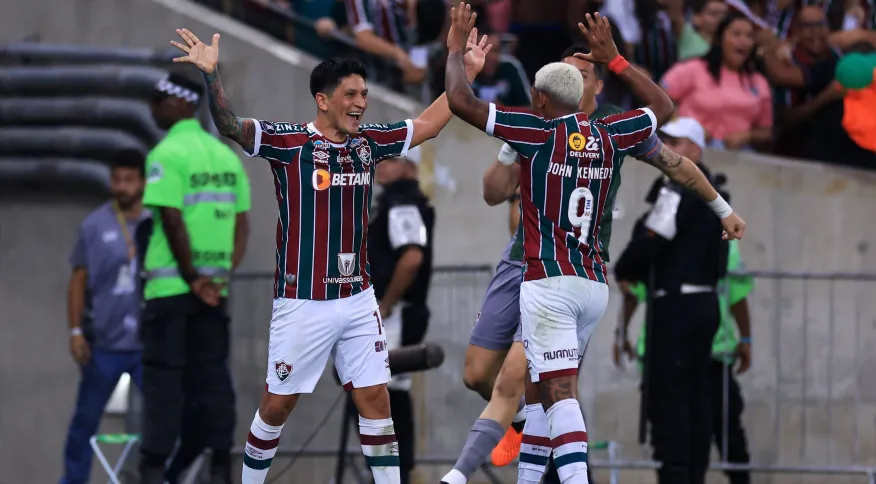
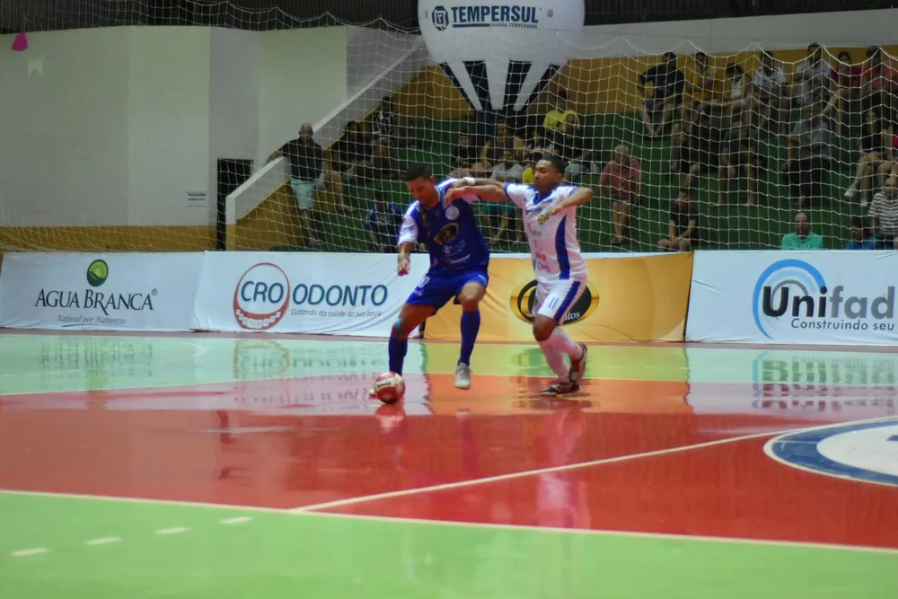
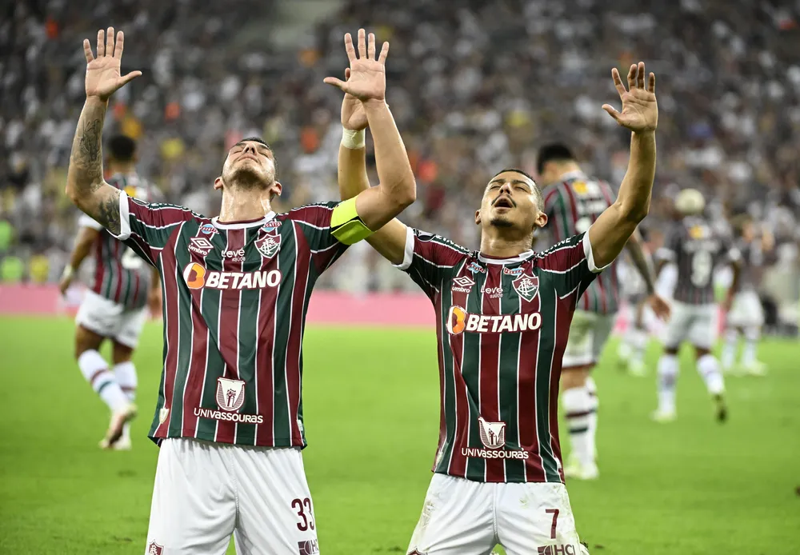
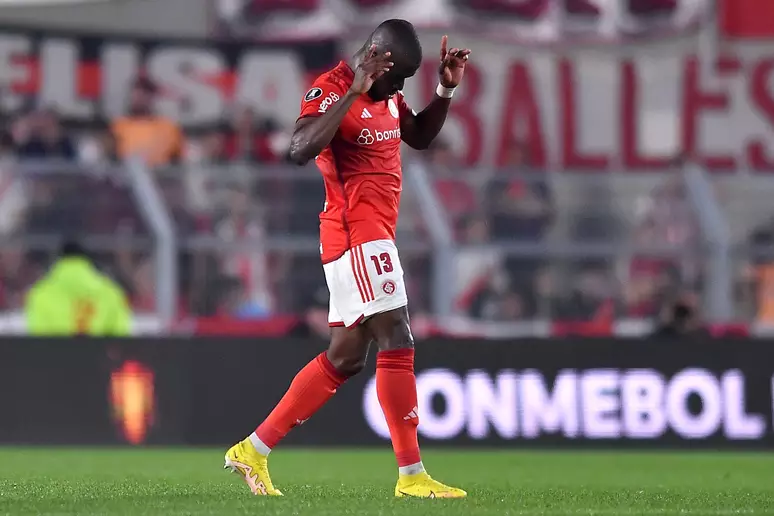
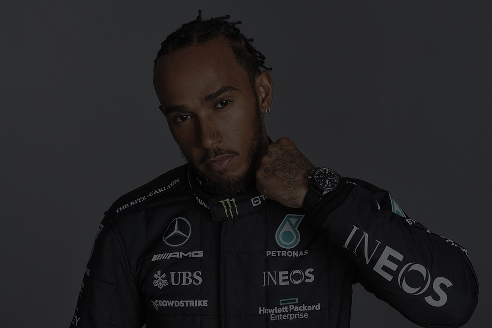
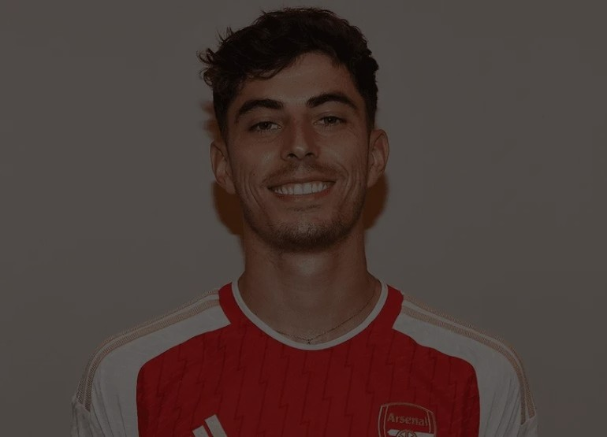

Home
Futebol
Basquete
Fórmula 1
Calendário
CADASTRO
LOGIN
.




Principais noticias
JAMES HARDEN PODE ESTAR A CAMINHO DO HOUSTON ROCKETS
LUIS CASTRO PRECISA DECIDIR ENTRE BOTAFOGO E AL-NASSR
RICCIARDO PODE SER A ESCOLHA CERTA PARA SUBSTITUIR PEREZ
Mais notícias

HAMILTON E MERCEDES CONTINUARÃO JUNTOS

ARSENAL ANUNCIA A CONTRATAÇÃO DE HAVERTZ
NIKOLA VOCEVIC SERÁ NOVO JOGADOR DOS BULLS
 JAMES HARDEN PODE ESTAR A CAMINHO DO HOUSTON ROCKETS
JAMES HARDEN PODE ESTAR A CAMINHO DO HOUSTON ROCKETS
 LUIS CASTRO PRECISA DECIDIR ENTRE BOTAFOGO E AL-NASSR
LUIS CASTRO PRECISA DECIDIR ENTRE BOTAFOGO E AL-NASSR
 RICCIARDO PODE SER A ESCOLHA CERTA PARA SUBSTITUIR PEREZ
RICCIARDO PODE SER A ESCOLHA CERTA PARA SUBSTITUIR PEREZ